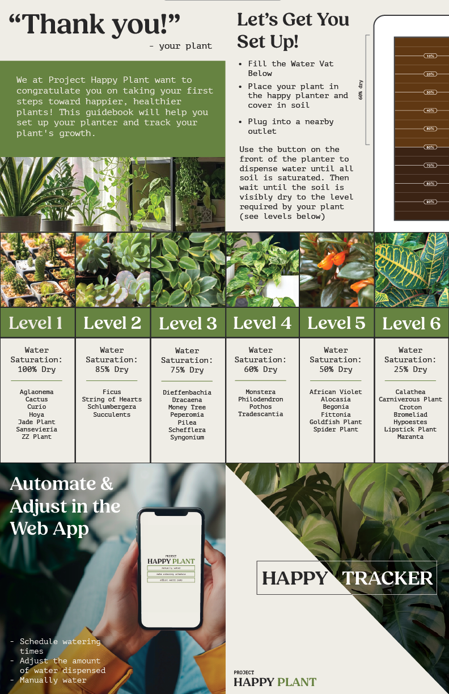
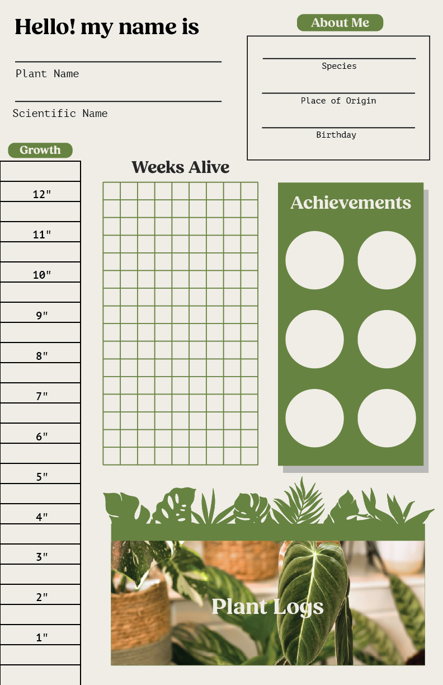
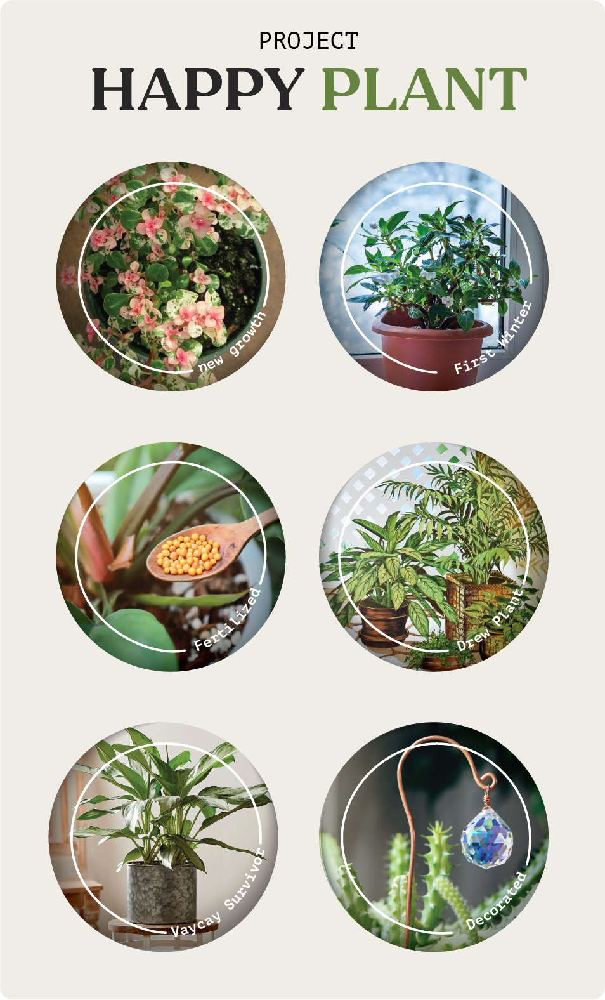
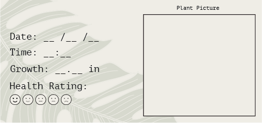
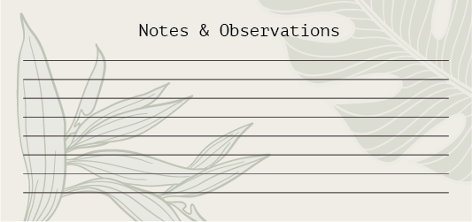

Happy Tracker
The Happy Tracker is a kit made up of stickers, log sheets, and a poster built to help you connect with your plant and log their growth!
On the first side of the tracker are the set-up instructions, suggested watering levels and information on the web app. On the other side
is a poster you can hang nearby your plant. Easily track plant growth with the ruler on the left side, check off weeks alive in the center grid
you can also note key information such as speices and birtdhay on the top. A set of achivemnt stickers can be used to document your journey
in plant care, and a set of plant log cards can be used to write in depth observations and notes about your plant. Entries can then be stored
in a pocket labeld "plant logs" on the front of the poster. All this was integrated into the Happy Tracker to provide users with a fun, novel
way to connect with their greenery and track their growth over time!





Happy Planter